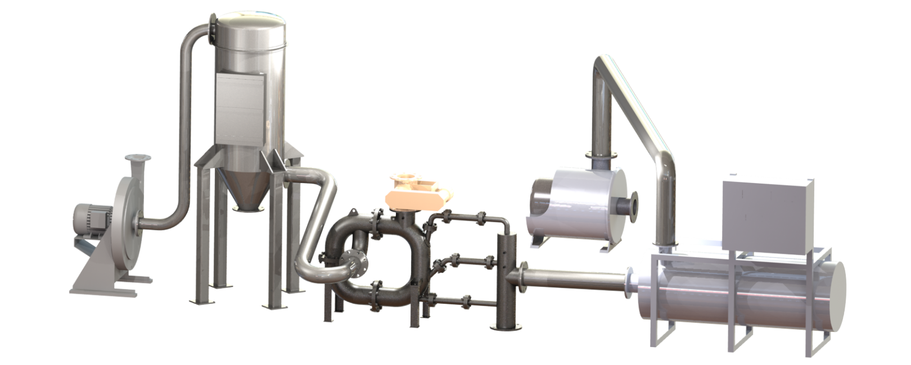

Exceptionally Efficient Flash Drying and Deagglomeration in a Single System
The Thermajet™ Flash Drying System produces a discrete, dry product from any feed material, including wet powder, slurry, centrifuge or filter cake. Automated system operation and high thermal transfer maximize product quality and drying efficiency. Systems are engineered for laboratory, pilot and full-scale production from 10 to 100,000 lb/hr. The Thermajet™ has a wide range of operating temperatures, pressures, and drying media providing safe processing of all materials including heat-sensitive and reactive products. High pressures can be used when a combination of drying and grinding is required.
High Thermal Efficiency
The high speed, turbulent flow inside the THERMAJET™ flash dryer allows efficient drying at lower outlet temperatures due to the greater surface area of the deagglomerated product.
Reliable Construction
The Thermajet™ flash dryer system is constructed entirely in the USA of only the highest quality components. The low-maintenance design has no moving parts and can be opened quickly and easily for inspection or cleaning. All parts are made in the USA which guarantees rapid delivery of spare items. Comprehensive engineering and durable construction enable our system to operate continuously 24 hours a day, 365 days a year.
Engineering Support and Service
Thermajet™ testing is done at our facility in Pennsylvania where detailed process data can be obtained for your application. Fluid Energy engineers and quality service technicians are immediately available to provide technical assistance and to guarantee that the Therma-Jet Flash Dryer System performs to your complete satisfaction.
Closed Loop Systems
Completely enclosed closed loop system including inert gas resupply and solvent removal condensers can be incorporated into most ThermaJet systems allowing for the safe process of solvents and/or hazardous materials.
Flash Calcining
The THERMAJET™ flash dryer is also an effective flash calciner in applications where the chemical reaction occurs at less than 900° F. The turbulent environment in the drying chamber provides instant and uniform heating of particles. This treatment yields a fine, deagglomerated, calcined product. The low residence time and immediate system response allow instantaneous calcining refinements to optimize the product.
Rental Systems
Most of Fluid Energy’s advanced flash drying systems are available on a rental basis to fulfill your immediate processing requirements.
Custom Processing
Fluid Energy maintains a facility for fine / ultra fine grinding of your material on a contractual basis. Other services include blending, drying and packaging. Our fully equipped QA laboratories are available for moisture, particle size and custom analyses of your products.
Thermajet™ Flash Drying, Calcining & Deagglomeration Systems
The Thermajet™ flash dryer is an innovative variation on toroidal jet milling technology, using a low-pressure (i.e. 2-10 psig) hot gas to dry and deagglomerate a wet feed. A hot gas is introduced into the ThermaJet through nozzles to create a high velocity, rotating gas/product stream. The gas stream rapidly sweeps the incoming wet feed material into the drying chamber where the turbulent hot air quickly deagglomerates the feed stock by creating particle-to-particle collisions. These collisions vastly increase the surface area exposed to the drying fluid, facilitating the instantaneous heat exchange necessary for flash drying.
From the drying zone, the gas/product stream enters into the static classification zone. Due to centrifugal force, the larger, wetter particles remain to the outside of the dryer ring, where they will be recirculated into the drying chamber. The lighter, dryer particles are removed with the exhaust gas stream.

Thermajet Operating Parameters - Representative Capacities - 1200° F Inlet Temp
| Mill Series |
1200° F Inlet TempApprox. System |
Feed Rate lb/hr |
180° F Outlet TempEvaporation lb/hr |
Total Input BTU/hr |
| 26 |
215 |
2001,800 |
50440 |
67,000600,000 |
| 1218 |
50120 |
7,50015,000 |
1,8003,900 |
2,500,0005,400,000 |
| 2430 |
250450 |
29,00045,000 |
7,00010,900 |
9,700,00015,000,000 |
| 364248 |
600750900 |
65,00090,000115,000 |
16,00021,80027,900 |
22,000,00030,000,00038,500,000 |
Thermajet Operating Parameters - Representative Capacities - 500° F Inlet Temp
| Mill Series |
500° F Inlet TempApprox. System |
Feed Rate lb/hr |
150° F Outlet TempEvaporation lb/hr |
Total Input BTU/hr |
| 26 |
420 |
85780 |
21190 |
31,000290,000 |
| 1218 |
75150 |
31,007,000 |
7501,700 |
1,140,0002,600,000 |
| 2430 |
300500 |
12,50019,500 |
3,0004,700 |
4,600,0007,200,000 |
| 364248 |
6008501,100 |
28,00038,00050,000 |
6,8009,20012,000 |
10,300,00014,000,00018,500,000 |
Thermajet™ Applications
The Thermajet™ is ideal for a wide range of flash drying applications including:
- Hard, Abrasive Materials: Ceramics, Mineral Ores
- Heat Sensitive Materials: Pigments, Waxes, Resins
- Sanitary, Sterile Applications: Pharmaceuticals, Foods, Cosmetics
- Agricultural Materials: Fungicides, Herbicides, Pesticides
- Volatile Materials: Propellants, Explosives, Oxidizers
- Synthetic Materials: Polymers, Plastics, Precipitates